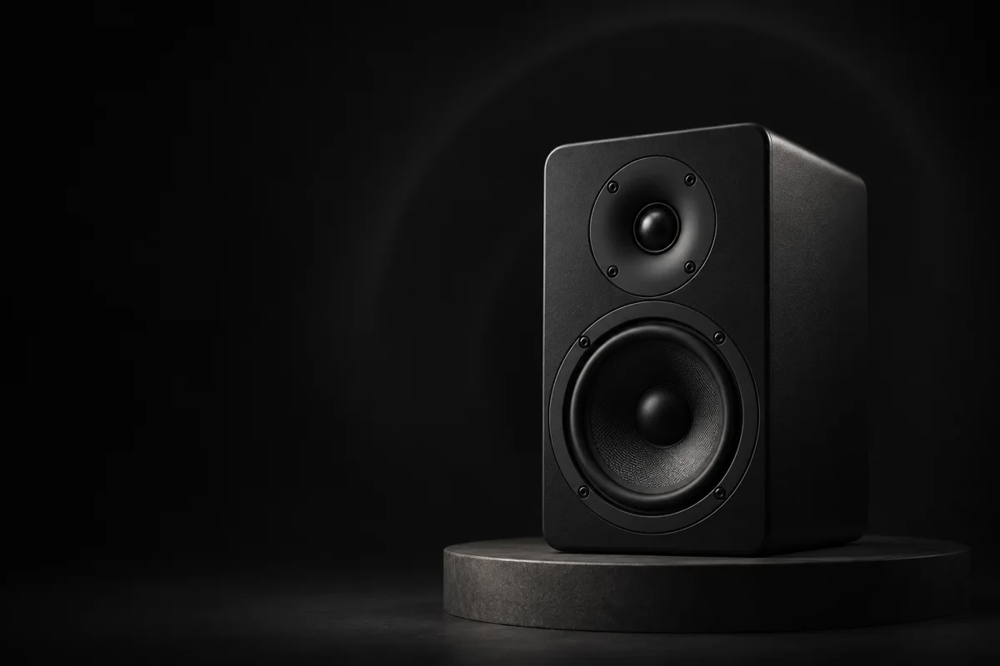
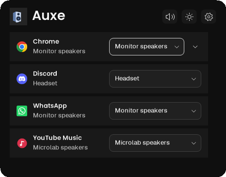
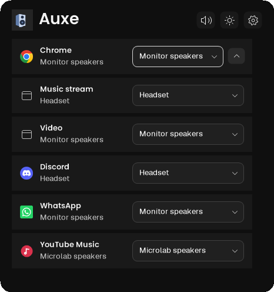
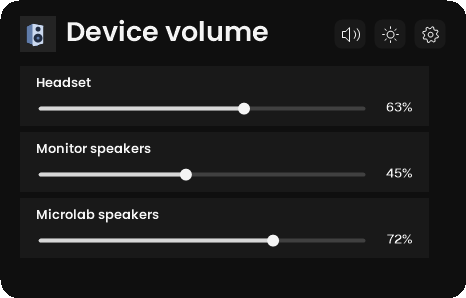
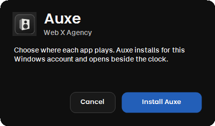

Windows 11 (x64)
Every app.
Its own output.
Discord in your headset. Music on your speakers. Choose where each app plays from one small panel near the clock.

Per-app audio.
One tray icon.
Switch outputs while you work, play, or take a call. Adjust each device's volume or give a Chrome tab its own speakers.


See device volume controls

From download
to playback.
- Install Auxe. Open AuxeSetup.exe and click Install Auxe.
- Start playback. Click the speaker beside the clock or under the Windows tray overflow arrow.
- Choose an output. Pick a device beside an app. Use System default to clear a route.

Do I need the Chrome companion?
Use the companion for individual Chrome tabs and the installed YouTube Music window. Windows apps like Discord and WhatsApp work with Auxe on their own. Open the gear menu in Auxe and choose Chrome companion setup for the folder and instructions.
What if an app stays on the old device?
Some apps hold on to their original audio stream. Restart playback, rejoin the call, or set the playback device inside that app to System default.
Where does my audio go?
Audio stays on your PC. Auxe has no account, analytics, or telemetry. Optional update checks contact GitHub to fetch releases. You can turn them off in the gear menu.